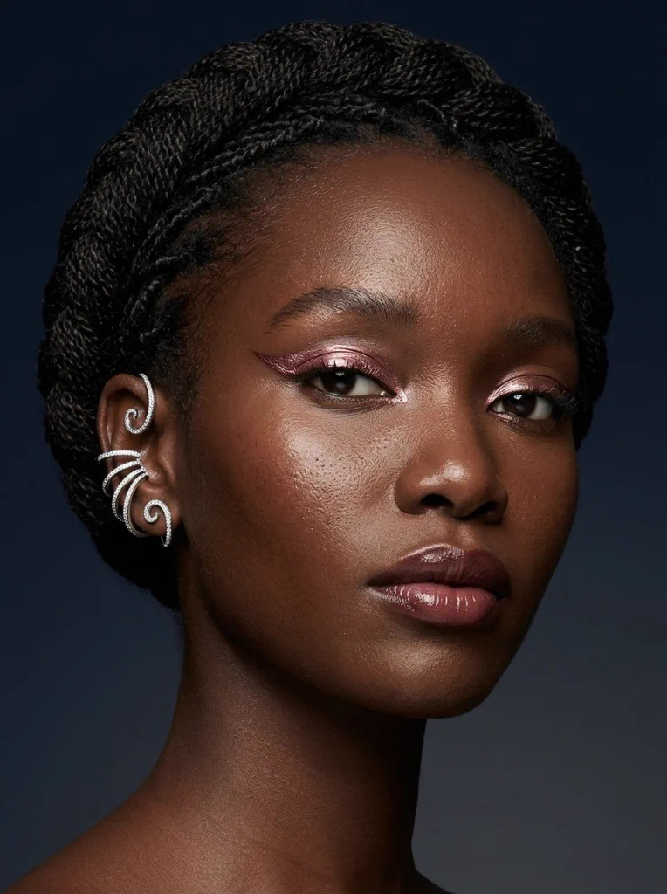
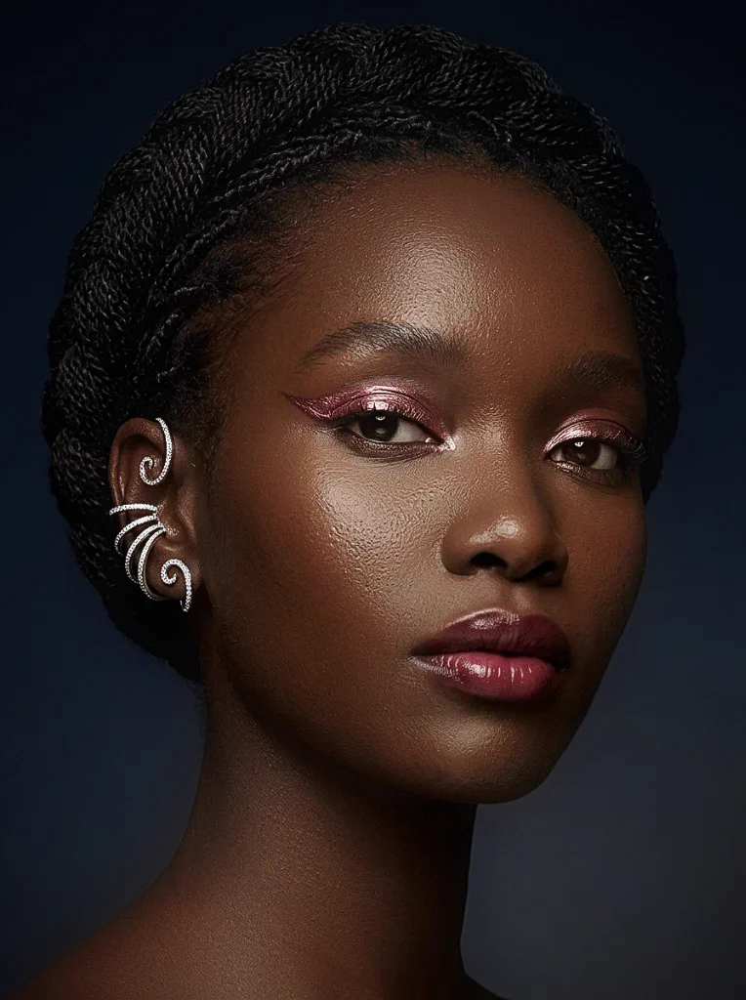
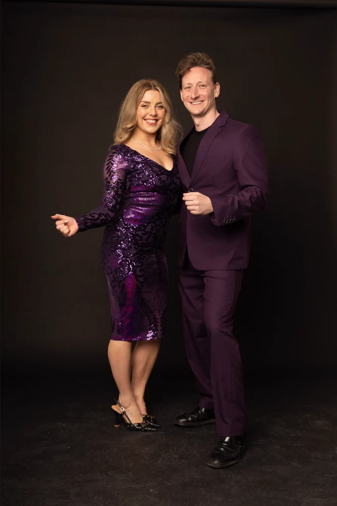
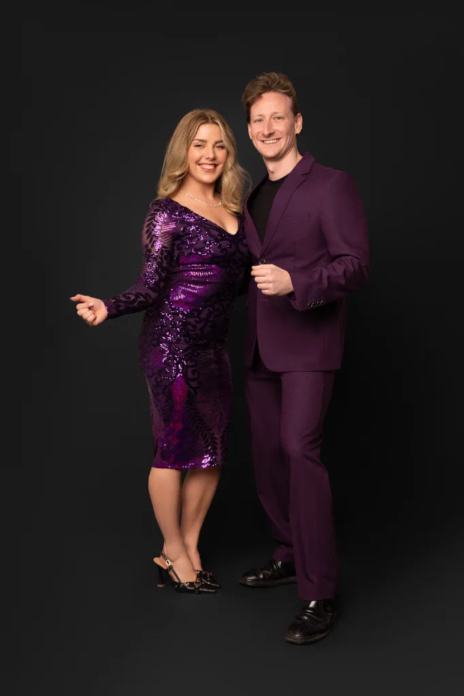
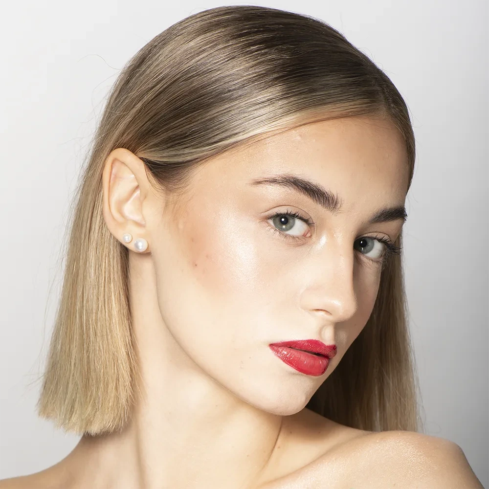
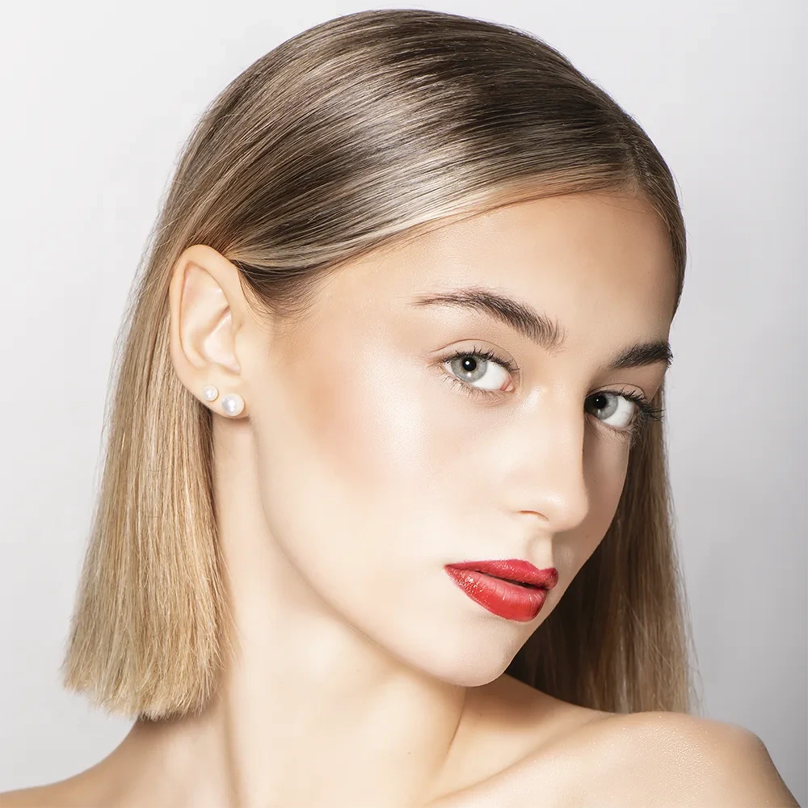
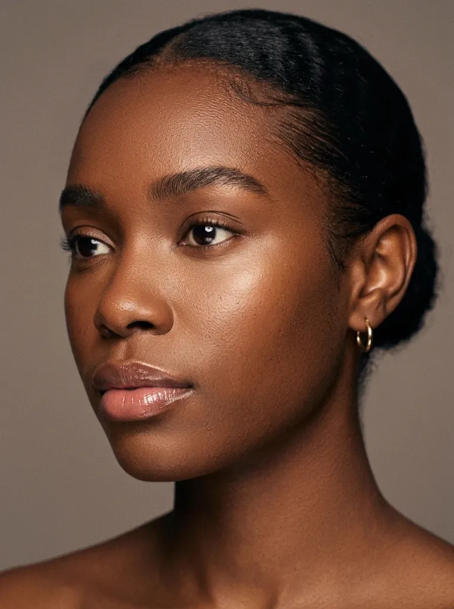

Model & Portrait Retouching, Done by Hand.
People don’t want to look like someone else. They want to look like themselves on a really good day. We retouch model, portrait, and executive headshot photos by hand in 16-bit Photoshop so skin keeps its authentic micro-texture, hair looks clean, and skin tone stays true to the person. No AI smoothing filters, no plastic finish, no face you don’t recognise. Send one image and get it back retouched, free, within 24 hours.
Retouching that makes people look like themselves
An over-edited portrait is easy to spot: waxy skin, missing pores, eyes that glow, a jawline that wasn’t there in real life. Viewers may not pinpoint the exact technical flaw, but they instinctively stop trusting the image. A well-retouched portrait does the opposite. It looks like the person on their best day: tired skin evened out, stray hairs and distractions gone, light and color balanced.
We work with portrait and model photographers, modeling agencies, commercial studios, and individual clients worldwide. Every image is edited by real professional artists, inspected at 200% zoom, and returned in the exact format and color profile you need.
This is fundamentally different from AI headshot generators. Those tools construct a synthetic approximation of a face. We retouch your real photograph, so the person in the picture is genuinely the person who walks into the room.

Before
AfterOur retouching boundaries: what we keep, what we never change
Good retouching has strict rules. We follow these boundaries unless you explicitly tell us otherwise:
Any change to shape happens only when you explicitly ask for it. Facial features, bone structure, and silhouettes remain 100% natural.
We keep freckles, beauty marks, scars, tattoos, and natural character lines by default, and ask before removing anything that is part of who someone is.
We preserve authentic skin pores and fine dermal grain instead of smoothing them away with destructive surface blurs.
Skin tones are matched to how the person looks in daylight, not to fleeting social media color presets or artificial saturation shifts.
For agency digitals and casting submissions, we keep edits minimal, light, and clean, because casting teams expect to see the real person.
Model photo retouching: portfolios, comp cards and digitals
A model’s book works when every image feels like the same person and the same standard. A single over-edited frame, or one that looks different from the rest, weakens the whole portfolio.
What goes wrong in model photos
- Uneven skin tone, redness, shine, and temporary shoot blemishes
- Stray hairs, wild flyaways, and messy hairlines across eyes
- Foundation creases, makeup smudges, and flash hot-spots
- Backdrop marks, floor tape, and wardrobe micro-lint
- Inconsistent color temperatures across different lighting setups
What our studio does about it
- Natural skin retouching with 100% dermal pore texture intact
- Hair grooming: flyaways and gaps tidied without flattening volume
- Eyes and teeth polished gently, never glowing or chalky white
- Backdrop and wardrobe cleanup so focus stays entirely on the model
- Light and color balanced across the entire book to read as one
Looking for on-model fashion apparel, garment shape alignment, or ghost mannequin editing? Visit our dedicated Fashion & Ghost Mannequin Retouching Department.

Before
AfterPortrait & beauty retouching: natural skin, clean hair, true color
Portraits and beauty images are judged up close, so tiny decisions show. We work in 16-bit non-destructive layers so every adjustment can be fine-tuned, and we build the skin edit in steps rather than applying a smoothing filter.
Skin & Dodge & Burn
Separating color and tone from fine texture. Evening out blotchiness and sculpting facial contours with careful 1–2 pixel light and shadow work.
Hair & Eyebrows
Stray hairs and forehead flyaways removed, gaps cleaned, and edges refined against the backdrop without blurring natural root volume.
Eyes & Teeth
Gentle sclera vessel cleanup, catchlight balancing, and believable enamel tooth shading with no unnatural chalky brightness.
Shine & Highlights
Controlled where flash strobes or oil created hot spots along the T-zone, restoring a soft, silky commercial glow.

Before
AfterHeadshot retouching: LinkedIn, corporate and actor headshots
Headshots do a specific job, which is making an instant, credible first impression. They have to look like the person, look professional, and stay consistent when a whole team is shown together.
Corporate & LinkedIn Headshots
We clean skin, tidy hair, balance color, and fix clothing creases and background marks. For executive directories, we match skin tone, brightness, and background across everyone so a team page looks like one cohesive shoot.
Actor Headshots
Casting teams want to meet the person in the photo. We keep edits light and honest: even skin, clear eyes, tidy hair, and a clean background, while preserving the authentic features that define your casting type.
Bulk Headshot Retouching for Studios
If you shoot dozens or hundreds of headshots, we handle the repetitive production. Send a few favorite master edits as a reference, we match your exact style on the first batch, and you approve before we process the rest.
Skin tone and complexion accuracy: true to the person
Studio flash strobes, warm tungsten fixtures, and colored backdrops can drastically shift how skin looks on camera. Direct flash washes out midtones, tungsten turns faces orange, and automated algorithms routinely introduce an unnatural ashy, grayish tint to deeper skin tones. We balance color so skin looks exactly like the person looks in real life.
Send a reference frame, daylight capture, or gray card balance, and our artists match to it. No destructive automated presets, no flattening of undertones, and zero artificial bleaching or darkening.
Melanin & Deep Complexions
Preserving rich golden-bronze undertones, deep espresso depth, and healthy natural luminescence without the ashy veil common in AI filters.
Undertone Balancing
Harmonizing localized flush, chest/neck exposure disparities, and makeup edge lines into one seamless, organic transition.
Series & Group Uniformity
Ensuring an editorial model spread or an entire executive directory shares calibrated warmth, density, and contrast across all frames.

Choose your retouching level
Different photos need different amounts of work. These three levels make it clear what you get, so you only pay for what you need:
Clean-up
Essential blemish cleanup, stray hair tidying, and light color balancing. Fast, affordable, and clean.
- Temporary blemish and dust removal
- Light flyaway hair tidying
- Exposure and contrast balance
- Clean studio backdrop sweep
Natural Beauty
Everything in Clean-up plus localized skin tone evening, eye and teeth refinement, and full calibrated color grade.
- Everything included in Clean-up
- Localized skin tone and redness evening
- Eye sclera cleanup and catchlight balance
- Hairline and eyebrow grooming
- Natural enamel tooth shade refinement
Editorial & Commercial
Everything above plus detailed pixel-level micro dodge and burn, macro skin sculpting, wardrobe and series consistency.
- Everything in Natural Beauty
- Micro dodge and burn light sculpting
- High-frequency dermal pore preservation
- Precise wardrobe crease & lint cleanup
- Full collection-wide series consistency
Volume pricing available for batches of 50+ or 200+ images. Send a few sample images for an exact quote, and we’ll reply within hours.
Retouching for portrait and model photographers
If you shoot for clients and spend your evenings editing, our studio can take the repeat production off your desk:
Your style, not ours
Send 3 to 5 edited images you love. We calibrate our brushwork, contrast, and color grading to match your exact aesthetic signature.
Consistent batches without drift
We retouch a first set, you approve it, and it becomes the benchmark reference for the remainder of your client catalog.
Overnight turnaround & mutual NDA
Upload at the end of your shoot day and get proofs the next morning for most standard orders. We routinely sign mutual NDAs to protect your client relationships.
How an order works
Send one test image or a full shoot batch in five minutes.
Send Your Files (~5 mins)
Upload RAW or 16-bit files through our private Client Portal or share a Google Drive, Dropbox, or WeTransfer link with notes and retouching level.
Hand-Retouched & Checked (12–24h)
Every portrait is retouched by hand in Photoshop with 100% dermal pore fidelity, and reviewed frame-by-frame at 200% zoom against your master style.
Review & Approve
Download layered PSDs or web-ready exports. Need a strand adjusted or contrast refined? Revisions are included at no extra hassle.
How to shoot portraits and models for easier retouching
Better source captures mean faster delivery and superior results. A few simple habits help tremendously:
Shoot in 14-Bit or 16-Bit RAW
Capture in uncompressed RAW format so our artists have full dynamic range to balance shadow detail, recover subtle highlights, and eliminate unwanted color casts without banding.
Control Flash Shine on T-Zone
Have translucent powder handy on set and feather your key lights. Preventing blown-out specular white spots on the forehead and nose preserves organic dermal pore texture.
Photograph an 18% Gray Card Frame
A single test shot with an 18% neutral gray card under your lighting setup allows our studio to calibrate exact skin undertones, especially across diverse melanin complexions.
Groom Hairlines Before the Shutter
Tidying forehead flyaways and checking for stray hairs across eyelashes or lips between poses saves extensive reconstructive cloning, speeding up batch turnaround times.
Trusted by portrait photographers, agencies & commercial studios
“It’s the respect Shoaib and his retouching team have for natural skin texture that sets their editorial work apart. Every flyaway hair, dust spot, and skin distraction is carefully removed while preserving original lighting and pore structure.”Raffaello Montillo Editorial Fashion & Portrait Photographer
“I rarely leave feedback unless someone genuinely exceeds expectations. We sent over a tough high-volume commercial model shoot under a brutal deadline. Shoaib’s studio handled the entire batch with great consistency and got revisions back to me within hours.”John Hubbard Commercial Fashion Photographer
“Our agency needed 45 corporate leadership headshots unified across three offices. Retoucher Shoaib balanced the backgrounds, hair flyaways, and skin warmth flawlessly. Outstanding studio turnaround.”Elena Rostova Creative Production Lead, Apex Talent
Questions about our model & portrait retouching services
What is portrait retouching?
It’s the careful editing of a portrait to even out skin tone, clean blemishes and distractions, tidy hair, balance light and color, and bring out the best of the photo, while keeping the person looking completely like themselves.
How much does portrait and model retouching cost?
It depends on the retouching level, the number of faces in the image, and how much work each photo needs. Clean-up starts from $0.79 per image, with volume pricing for 50+ and 200+ images. Send a few sample images for an exact quote within hours.
Will my skin look plastic or over-smoothed?
No. We keep authentic pores and natural texture, and we even out tone and clean blemishes in non-destructive layers instead of using a smoothing filter. If something looks over-edited, we adjust it until it looks natural.
Do you reshape faces or bodies?
Not unless you ask. By default we keep natural facial proportions, features, and lines. If you want a shape change, tell us exactly what and we’ll confirm what’s reasonable.
Will you remove tattoos, scars or moles?
We keep them by default, because they are part of who someone is. If you want a specific mark removed or subdued, tell us in your order notes and we’ll do it.
Can you retouch actor headshots and model digitals for casting?
Yes. For digitals and casting submissions we keep edits light and honest, because casting teams want to see the real person. For portfolio and comp card images we can do a fuller natural commercial retouch.
Can you retouch a whole team’s headshots so they match?
Yes. We match skin tone warmth, exposure, contrast, and background across everyone, so a corporate team directory looks like one cohesive shoot even when people were photographed on different days.
Do you use AI to retouch or generate faces?
No. Every image is retouched manually in Adobe Photoshop with non-destructive layers. We don’t generate synthetic faces, and we don’t use one-click AI smoothing filters.
What files should I send, and how fast can you deliver?
Send RAW (CR2, CR3, ARW, NEF, DNG) or 16-bit TIFF/PSD files. Most orders return within 12 to 24 hours. Larger batches take 24 to 48 hours, and rush delivery can be arranged upon request.
Explore our other dedicated retouching departments
In addition to model and beauty portraits, Retoucher Shoaib Studio operates specialized departments for every commercial discipline:
E-Commerce Product Retouching
Pure white packshots, hand-drawn clipping paths, eyewear glare removal, and leather goods from $0.50.
Fashion & Ghost Mannequin
3D neck joins, inside brand labels, sheer fabric isolation, and on-model apparel lookbook polish.
Jewelry & Watch Retouching
White gold color calibration, diamond brilliance, prongs cleanup, and watch crystal glare removal.
Still Life & Cosmetics
Luxury glass reflections, cosmetic texture smears, pump dispensers, and metallic foil stamping.
Automotive Photo Retouching
Studio background swaps, paint gloss polish, glass reflection cleanup, and natural contact shadows.